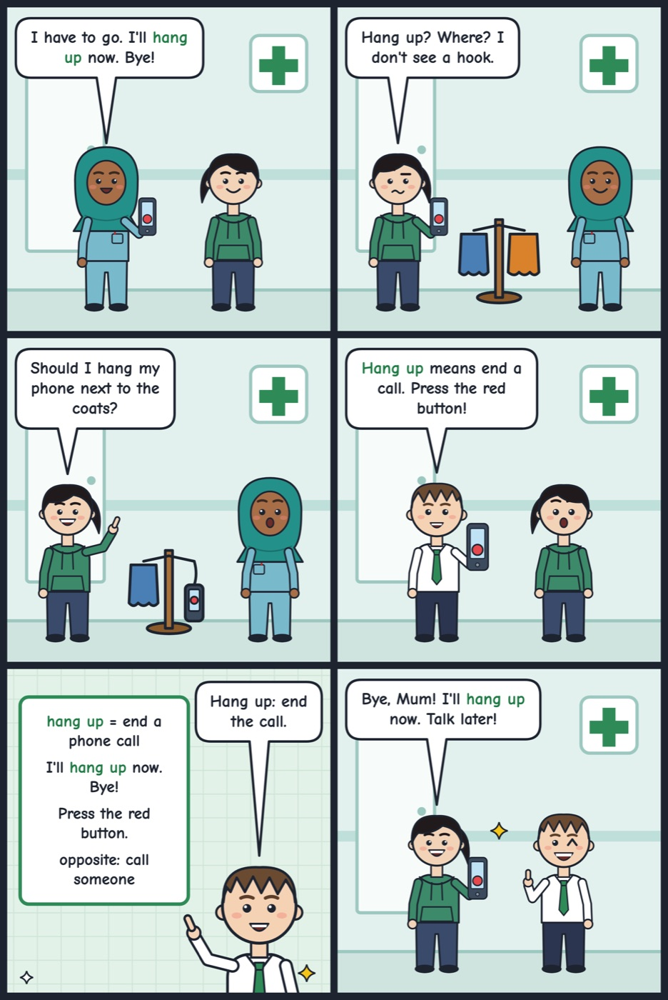

hang up
To hang up is to end a phone call.
Sorry, I have to hang up now. My bus is here.
Hang up means to end a phone call. The opposite is to call someone.
Your turn
When do you hang up fast?
When do you hang up fast?
See it in a comic
